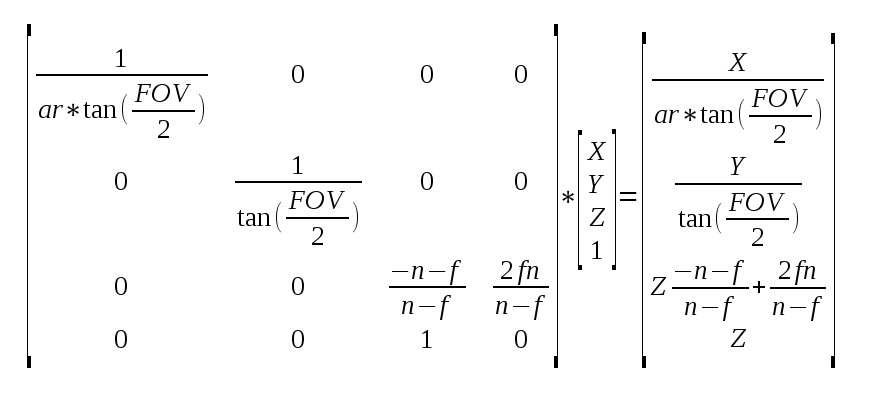
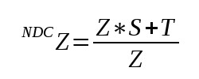
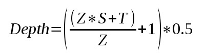
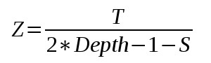
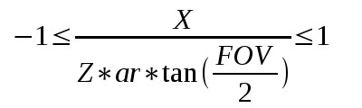
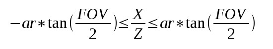

Background
In the previous tutorial we studied the Screen Space Ambient Occlusion algorithm. We used a geometry buffer which contained the view space position of all the pixels as a first step in our calculations. In this tutorial we are going to challenge ourselves by calculating the view space position directly from the depth buffer. The advantage of this approach is that much less memory is required because we will only need one floating point value per pixel instead of three. This tutorial relies heavily on the previous tutorial so make sure you fully understand it before going on. The code here will be presented only as required changes over the original algorithm.
In the SSAO algorithm we scan the entire window pixel by pixel, generate random points around each pixel in view space, project them on the near clipping plane and compare their Z value with the actual pixel at that location. The view space position is generated in a geometry pass at the start of the render loop. In order to populate correctly the geometry buffer with the view space position we also need a depth buffer (else pixels will be updated based on draw order rather than depth). We can use that depth buffer alone to reconstruct the entire view space position vector, thus reducing the space required for it (though some more per-pixel math will be required).
Let's do a short recap on the stages required to populate the depth buffer (if you need a more in-depth review please see tutorial 12). We begin with the object space position of a vertex and multiply it with the WVP matrix which is a combined transformations of local-to-world, world-to-view and projection from view on the near clipping plane. The result is a 4D vector with the view space Z value in the fourth component. We say that this vector is in clip space at this point. The clip space vector goes into the gl_Position output vector from the vertex shader and the GPU clips its first three components between -W and W (W is the fourth component with the view space Z value). Next the GPU performs perspective divide which means that the vector is divided by W. Now the first three components are between -1 and 1 and the last component is simply 1. We say that at this point the vector is in NDC space (Normalized Device Coordinates).
Usually the vertex is just one out of three vertices comprising a triangle so the GPU interpolates between the three NDC vectors across the triangle face and executes the fragment shader on each pixel. On the way out of the fragment shader the GPU updates the depth buffer with the Z component of the NDC vector (based on several state nobs that must be configured correctly such as depth testing, depth write, etc). An important point to remember is that before writing the Z value to the depth buffer the GPU transforms it from (-1,1) to (0,1). We must handle this correctly or else we will get visual anomalies.
So this is basically all the math relevant to the Z buffer handling. Now let's say that we have a Z value that we sampled for the pixel and we want to reconstruct the entire view space vector from it. Everything we need in order to retrace our steps is in the above description but before we dive any further let's see that math again only this time with numbers and matrices rather than words. Since we are only interested in the view space position we can look at the projection matrix rather than the combined WVP (because projection works on the view space position):
What we see above is the projection of the view space vector to clip space (the result on the right). Few notations:
- ar = Aspect Ratio (width/height)
- FOV = Field of View
- n = near clipping plane
- f = far clipping plane
In order to simplify the next steps let's call the value in location (3,3) of the projection matrix 'S' and the value in location (3,4) 'T'. This means that the value of the Z in NDC is (remember perspective divide):
And since we need to transform the NDC value from (-1,1) to (0,1) the actual value written to the depth buffer is:

It is now easy to see that we can extract the view space Z from the above formula. I haven't specified all the intermediate steps because you should be able to do them yourself. The final result is:

So we have the view space Z. Let's see how we can recover X and Y. Remember that after transforming X and Y to clip space we perform clipping to (-W,W) and divide by W (which is actually Z in view space). X and Y are now in the (-1,1) range and so are all the X and Y values of the to-be-interpolated pixels of the triangle. In fact, -1 and 1 mapped to the left, right, top and bottom of the screen. This means that for every pixel on the screen the following equation applies (showing for X only; same applies to Y just without 'ar'):

We can write the same as:
Note that the left and right hand side of the inequality are basically constants and can be calculated by the application before the draw call. This means that we can draw a full screen quad and prepare a 2D vector with those values for X and Y and have the GPU interpolate them all over the screen. When we get to the pixel we can use the interpolated value along with Z in order to calculate both X and Y.
Source walkthru
(tutorial46.cpp:101)
float AspectRatio = m_persProjInfo.Width / m_persProjInfo.Height;
m_SSAOTech.SetAspectRatio(AspectRatio);
float TanHalfFOV = tanf(ToRadian(m_persProjInfo.FOV / 2.0f));
m_SSAOTech.SetTanHalfFOV(TanHalfFOV);
As I said earlier, we are only going to review the specific code changes to the previous tutorial in order to implement depth reconstruction. The first change that we need to make is to provide the aspect ratio and the tangent of half the field of view angle to the SSAO technique. We see above how to calculate them.
(tutorial46.cpp:134)
if (!m_depthBuffer.Init(WINDOW_WIDTH, WINDOW_HEIGHT, true, GL_NONE)) {
return false;
}
Next we need to initialize the geometry buffer (whose class attribute was renamed from m_gBuffer to m_depthBuffer) with GL_NONE as the internal format type. This will cause only the depth buffer to be created. Review io_buffer.cpp in the Common project for further details on the internal workings of the IOBuffer class.
(tutorial46.cpp:181)
void GeometryPass()
{
m_geomPassTech.Enable();
m_depthBuffer.BindForWriting();
glClear(GL_DEPTH_BUFFER_BIT);
m_pipeline.Orient(m_mesh.GetOrientation());
m_geomPassTech.SetWVP(m_pipeline.GetWVPTrans());
m_mesh.Render();
}
void SSAOPass()
{
m_SSAOTech.Enable();
m_SSAOTech.BindDepthBuffer(m_depthBuffer);
m_aoBuffer.BindForWriting();
glClear(GL_COLOR_BUFFER_BIT);
m_quad.Render();
}
We can see the change from m_gBuffer to m_depthBuffer in the geometry and SSAO passses. Also, we no longer need to call glClear with the color buffer bit because m_depthBuffer does not contain a color buffer. This completes the changes in the main application code and you can see that they are fairly minimal. Most of the juice is in the shaders. Let's review them.
(geometry_pass.vs/fs)
#version 330
layout (location = 0) in vec3 Position;
uniform mat4 gWVP;
// uniform mat4 gWV;
// out vec3 ViewPos;
void main()
{
gl_Position = gWVP * vec4(Position, 1.0);
// ViewPos = (gWV * vec4(Position, 1.0)).xyz;
}
#version 330
// in vec3 ViewPos;
// layout (location = 0) out vec3 PosOut;
void main()
{
// PosOut = ViewPos;
}
Above we see the revised geometry pass vertex and fragment shaders with the stuff that we no longer need commented out. Since we are only writing out the depth everything related to view space position was thrown out. In fact, the fragment shader is now empty.
(ssao.vs)
#version 330
layout (location = 0) in vec3 Position;
uniform float gAspectRatio;
uniform float gTanHalfFOV;
out vec2 TexCoord;
out vec2 ViewRay;
void main()
{
gl_Position = vec4(Position, 1.0);
TexCoord = (Position.xy + vec2(1.0)) / 2.0;
ViewRay.x = Position.x * gAspectRatio * gTanHalfFOV;
ViewRay.y = Position.y * gTanHalfFOV;
}
Based on the math reviewed above (see the very end of the background section) we need to generate something that we call a view ray in the vertex shader of the SSAO technique. Combined with the view space Z calculated in the fragment shader it will help us extract the view space X and Y. Note how we use the fact that the incoming geometry is a full screen quad that goes from -1 to 1 on the X and Y axis in order to generate the end points of '-1/+1 * ar * tan(FOV/2)' for X and '-1/+1 * tan(FOV/2)' and 'tan(FOV/2)' for Y.
(ssao.fs)
#version 330
in vec2 TexCoord;
in vec2 ViewRay;
out vec4 FragColor;
uniform sampler2D gDepthMap;
uniform float gSampleRad;
uniform mat4 gProj;
const int MAX_KERNEL_SIZE = 64;
uniform vec3 gKernel[MAX_KERNEL_SIZE];
float CalcViewZ(vec2 Coords)
{
float Depth = texture(gDepthMap, Coords).x;
float ViewZ = gProj[3][2] / (2 * Depth -1 - gProj[2][2]);
return ViewZ;
}
void main()
{
float ViewZ = CalcViewZ(TexCoord);
float ViewX = ViewRay.x * ViewZ;
float ViewY = ViewRay.y * ViewZ;
vec3 Pos = vec3(ViewX, ViewY, ViewZ);
float AO = 0.0;
for (int i = 0 ; i < MAX_KERNEL_SIZE ; i++) {
vec3 samplePos = Pos + gKernel[i];
vec4 offset = vec4(samplePos, 1.0);
offset = gProj * offset;
offset.xy /= offset.w;
offset.xy = offset.xy * 0.5 + vec2(0.5);
float sampleDepth = CalcViewZ(offset.xy);
if (abs(Pos.z - sampleDepth) < gSampleRad) {
AO += step(sampleDepth,samplePos.z);
}
}
AO = 1.0 - AO/64.0;
FragColor = vec4(pow(AO, 2.0));
}
The first thing we do in the fragment shader is to calculate the view space Z. We do this with the exact same formula we saw in the background section. The projection matrix was already here in the previous tutorial and we just need to be careful when accessing the 'S' and 'T' items in the (3,3) and (3,4) locations. Remember that the index goes from 0 to 3 (vs. 1 to 4 in standard matrix semantics) and that the matrix is transposed so we we need to reverse the column/row for the 'T'.
Once the Z is ready we multiply it by the view ray in order to retrieve the X and Y. We continue as usual by generating the random points and projecting them on the screen. We use the same trick to calculate the depth of the projected point.
If you have done everything correctly you should end up with pretty much the same results as in the previous tutorial... ;-)